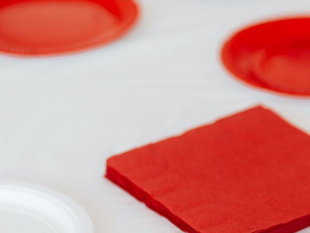
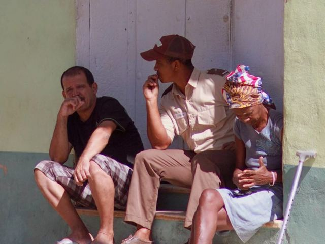
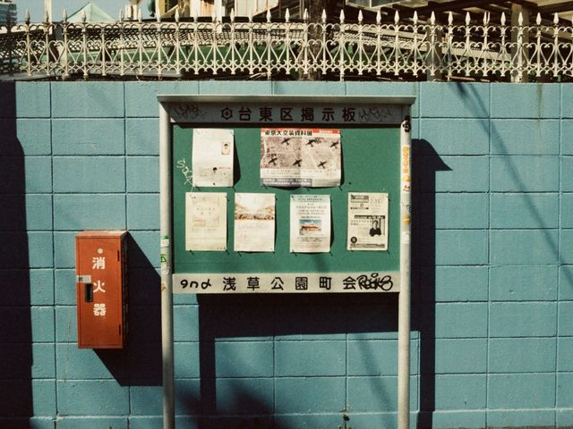
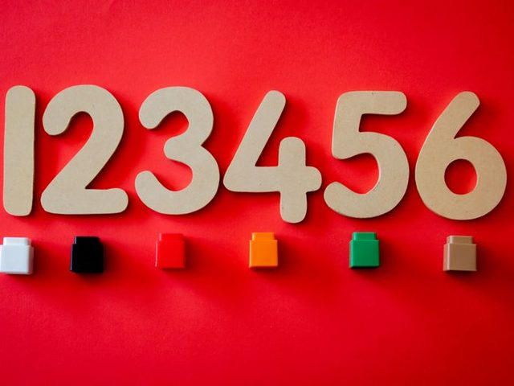

VOCABULARY · WORD UP 單字複習 UNIT 32
N．N 開頭
WORD UP「N」的 50 個字（nail 到 nurse）。紅色＝要複習，藍色標籤＝WORD UP 標熟記、還要在這裡考對。
共 50 個單字．點 🔊 聽發音
1nailn.
指甲；釘子
Don't bite your nails.不要咬指甲。
2namen./v.
名字；命名
What's your name?你叫什麼名字？

3napkinn.
餐巾紙
Can I have a napkin, please?可以給我一張餐巾紙嗎？
4nationn.
國家；民族
The whole nation was happy about the news.全國都為這個消息高興。
5nationaladj.
國家的；全國的
Taiwan has many national parks.台灣有很多國家公園。
6naturaladj.
自然的；天然的
I like natural food.我喜歡天然食物。

7naturen.
自然；大自然
不加 the
We should protect nature.我們應該保護大自然。
8naughtyadj.
頑皮的
gh 不發音
The naughty boy broke the window.那個頑皮的男孩打破了窗戶。
9nearprep./adj.
靠近；近的
I live near the school.我住在學校附近。
10nearlyadv.
幾乎
= almost
It's nearly ten o'clock.快十點了。
11necessaryadj.
必要的
It is necessary to V
Is it necessary to bring a dictionary?有必要帶字典嗎？
12neckn.
脖子
A giraffe has a long neck.長頸鹿有長脖子。

13necklacen.
項鍊
She wears a gold necklace.她戴著金項鍊。
14needv./n.
需要
need to V
I need to finish my homework.我需要寫完功課。
15needlen.
針
Grandma sews with a needle and thread.奶奶用針線縫東西。
16negativeadj.
負面的；否定的
positive 正面的
Don't be so negative.不要那麼負面。

17neighborn.
鄰居
Our neighbors are very friendly.我們的鄰居很友善。
18nephewn.
姪子；外甥
niece 姪女
My nephew is three years old.我的姪子三歲。

19nervousadj.
緊張的
be nervous about
I'm nervous about the test.我對考試很緊張。
20nestn.
鳥巢
There is a bird's nest in the tree.樹上有一個鳥巢。
21neveradv.
從不
頻率最低
I never eat breakfast late.我從不晚吃早餐。
22newadj.
新的
I got a new bike for my birthday.我生日收到一台新腳踏車。

23New Year's Dayn.
元旦
1 月 1 日
We watched fireworks on New Year's Day.我們元旦看了煙火。

24New Year's Even.
除夕；跨年夜
12 月 31 日
We count down on New Year's Eve.我們在跨年夜倒數。

25New Yorkn.
紐約
New York is a big city in the USA.紐約是美國的大城市。

26newsn.
新聞；消息
不可數，動詞用單數
The news is good.這是好消息。
27newspapern.
報紙
Grandpa reads the newspaper every morning.爺爺每天早上看報紙。
28nextadj./adv.
下一個；接下來
next to 在…旁邊
The bank is next to the post office.銀行在郵局旁邊。

29niceadj.
好的；親切的
It's nice to meet you.很高興認識你。

30niecen.
姪女；外甥女
My niece likes to draw.我的姪女喜歡畫畫。
31nightn.
晚上；夜
at night 在晚上
Owls hunt at night.貓頭鷹在晚上獵食。
32ninen.
九
ninth 第九（沒有 e）
School starts at nine.九點開始上課。

33nineteenn.
十九
My cousin is nineteen.我表哥十九歲。
34ninetyn.
九十
Grandma lived to ninety.奶奶活到九十歲。
35nodv.
點頭
過去式 nodded
She nodded and smiled.她點頭微笑。
36noisen.
噪音；聲音
make noise 吵鬧
Don't make so much noise.不要那麼吵。
37noisyadj.
吵鬧的
quiet 安靜的
The classroom is too noisy.教室太吵了。

38noodlen.
麵條
常用複數 noodles
I'd like a bowl of beef noodles.我要一碗牛肉麵。

39noonn.
中午
at noon
We eat lunch at noon.我們中午吃午餐。
40northn./adj.
北方；北方的
Keelung is in the north of Taiwan.基隆在台灣北部。
41northernadj.
北方的；北部的
It is cold in northern Taiwan in winter.台灣北部冬天很冷。
42nosen.
鼻子
An elephant uses its nose to drink water.大象用鼻子喝水。

43noten./v.
筆記；便條；注意
take notes 做筆記
Take notes in class.上課要做筆記。

44notebookn.
筆記本；筆電
Write the words in your notebook.把單字寫在筆記本上。

45noticev./n.
注意到；通知
Did you notice anything strange?你有注意到什麼奇怪的地方嗎？
46noveln.
小說
I'm reading a long novel.我正在讀一本長篇小說。
47Novembern.
十一月
It gets cool in November.十一月天氣變涼。
48nowadv.
現在
right now 立刻
Do it right now!現在立刻去做！

49numbern.
數字；號碼
a number of 一些
What's your phone number?你的電話號碼是多少？
50nursen.
護理師
The nurse took my temperature.護理師幫我量體溫。
FOCUS
重點整理
| 說法 | 中文 | 例子 |
|---|---|---|
| nature / natural | 大自然（名詞）／ 自然的（形容詞） | love nature ／ natural food |
| noise / noisy | 噪音（名詞）／ 吵鬧的（形容詞） | make noise ／ a noisy room |
| nation / national | 國家 ／ 國家的 | a national park |
| nephew / niece | 姪子、外甥 ／ 姪女、外甥女 | my nephew and niece |
| next to | 在…旁邊 | next to the bank |
| take notes | 做筆記 | take notes in class |
| be nervous about | 對…緊張 | nervous about the speech |
news 不可數，動詞用單數：The news is exciting.